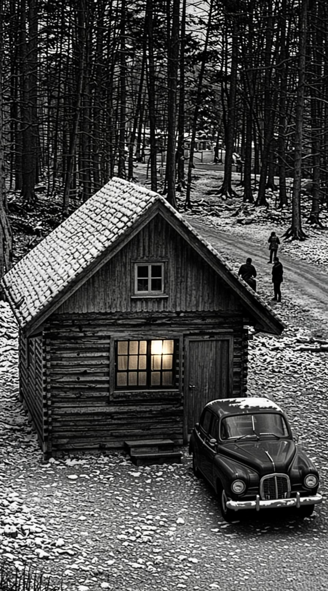
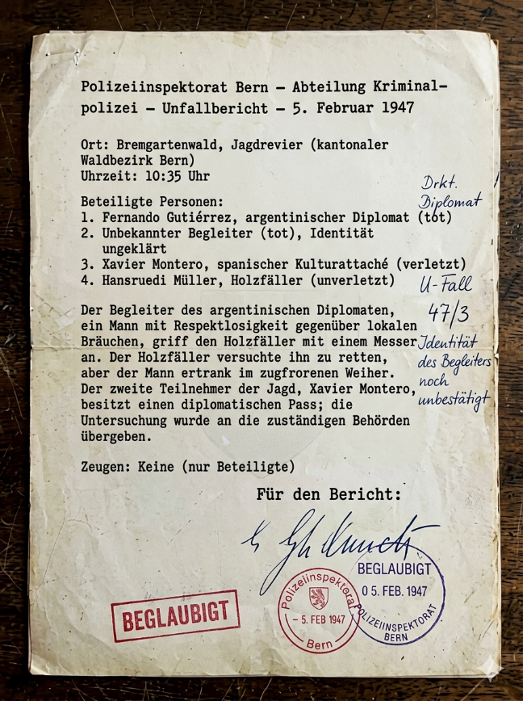

Берн, 5 февраля 1947. Охотничьи угодья кантона Берн (лес к югу от города)
Утро было серым и холодным. Снег, выпавший накануне, слежался, но не растаял — мороз держался около пяти градусов. Мастер вышел из машины в 6:55. Небо на востоке только начинало сереть, в лесу было темно. Он застегнул охотничий жилет, проверил ружьё в чехле. Термос со стаканами взял с собой — чемодан с запасным паспортом остался в багажнике.
У лесной конторы стоял тёмный «Опель». Аргентинец курил у капота. Рядом с ним застыл человек, которого Мастер не видел раньше.
Коренастый, с широким плоским лицом, в котором угадывалась южноамериканская кровь. На нём был охотничий костюм, сшитый по местной моде, но сидел он неестественно, как маскарадный наряд. Зелёная куртка была узка в плечах, шляпа с пером казалась чужой. Человек держался навытяжке, глаза неотрывно следили за Мастером. Гринго не моргал. Мастер заметил это — глаза оставались открытыми слишком долго, как у человека, который привык не показывать страх.

«Гринго, — подумал Мастер. — Телохранитель. Или исполнитель. Свой человек Аргентинца».
Аргентинец шагнул навстречу, улыбнулся коротко, без тепла:
— Сеньор Монтеро. Вы пунктуальны. Я ценю это.
— Я ценю приглашение, — ответил Мастер.
Он перевёл взгляд на человека в зелёной куртке. Аргентинец нехотя кивнул:
— Это... мой егерь. Он будет сопровождать нас.
Мастер кивнул, не спрашивая имени. Он уже понял: охотничьи угодья — территория Аргентинца. И он не собирался позволить ему управлять сценой.
— У меня будет свой загонщик, — сказал Мастер ровно.
Аргентинец поднял бровь, но промолчал.
Мастер вошёл в лесную контору. Внутри было тепло, пахло сухими дровами и машинным маслом. За столом сидел пожилой лесник, у печи грелись двое в мокрых сапогах. В углу, на скамье, тяжело дыша, сидел человек, слишком крупный для этой комнаты. Широкие плечи, огромные ладони, обветренное лицо, в руках — топор с длинным топорищем.
«Лесоруб. Настоящий».
Мастер подошёл к нему:
— Ты пойдёшь со мной на охоту. По-немецки, чётко, без просьбы.
Лесоруб поднял голову:
— Я не охотник. Я лес рублю.
— Сегодня ты будешь загонщиком. Мастер вытащил из кармана пачку франков, отсчитал три крупные купюры, положил на широкую ладонь. — Это твоя плата. Сейчас. И ещё столько же после.

Он посмотрел на Мастера, потом на деньги, потом снова на Мастера. В его взгляде мелькнуло что-то вроде понимания — он знал, что это не про охоту, но спросил только:
— Что делать?
— Видишь человека в зелёной куртке с пером на шляпе? — Мастер кивнул в сторону окна. — Ты будешь с ним. Шаг в шаг. Если он идёт — ты идёшь. Останавливается — ты останавливаешься. Не отходи от него ни на шаг. Понял?
Лесоруб кивнул.
Он потянулся к двуручному тесаку у печи, но взгляд Мастера остановил его. Медленно разжал пальцы, отступил. Вместо тесака взял с полки маленький топорик — лёгкий, с коротким топорищем. Воткнул за пояс.
Мастер кивнул.
Они вышли. Гринго стоял у опушки. Лесоруб бесшумно встал позади него. Мастер посмотрел на них — два человека, один в чужой одежде, другой — в чужом амплуа.
— Идите загонять лис. Держитесь вместе. Не теряйте друг друга.
Гринго посмотрел на Аргентинца. Тот коротко кивнул. Гринго развернулся и шагнул в лес. Лесоруб — следом. Через минуту они скрылись за кустами.
Аргентинец повернулся к Мастеру:
— Что вы хотели?
Мастер не ответил сразу. Подошёл ближе, положил руку на плечо Аргентинца:
— Холодно. Давайте согреемся.
Он отстегнул термос, налил глинтвейн в никелированный стакан. Аргентинец взял — заглянул внутрь, понюхал: ничего.
Мастер взял свой стакан из другого кармана, налил себе, выпил. Аргентинец — за ним.
Мастер убрал стаканы, сел на поваленный ствол. Аргентинец — напротив, опершись на ружьё.
— Что вы хотели? — повторил он, но голос уже звучал тише.
Мастер посмотрел на него. Солнце поднялось и приятно играло тенями февральского леса.
— Я здесь человек новый, а вы всех знаете. Мне рассказывают страшные истории про дипломатов. Ни за что не поверю, что в этом обществе может быть жестокость. Вот вы — его член, уважаемый человек, такую сделку обеспечили...
Аргентинец усмехнулся:
— Я вижу, вы неплохо осведомлены.
— Что вы, — сказал Мастер. — Гораздо хуже вас.
Он замолчал.
Следующие двадцать три минуты Мастер расспрашивал Аргентинца о министерстве иностранных дел, о контактах, о важных неофициальных лицах. Ему нужны были эти сведения для легенды.
Аргентинец отвечал неохотно, дожидаясь своей очереди задавать вопросы. Он не чувствовал – он знал, что Мастер не просто атташе, что он не тот, за кого себя выдает.
Где-то вдалеке раздались выстрелы — охота шла за кустами. Эти двое ещё не начали.
— У вас остался глинтвейн? — спросил Аргентинец.
— Да.
Мастер колебался долю секунды. Потом сделал выбор. Налил Аргентинцу, налил себе. Молча чокнулись.
— А я о вас тоже справки навёл, — начал Аргентинец. — Говорят, вы в Лондоне были. Работали в посольстве. Но до этого — кто вы? Откуда у вас такие связи?
Мастер смотрел спокойно. Он знал: этот момент наступит.
— Хотите узнать, кто я? Тогда давайте поговорим по-настоящему. Без масок.
Аргентинец улыбнулся впервые искренне:
— Идёт.
Мастер налил ещё. Протянул стакан. Аргентинец выпил до дна. Мастер сделал глоток из своего.
— Начнём с самого начала, — сказал Мастер. — Я тот, кто зачищал работу Вальтера в Лиссабоне. Работу, которую оплатил фон Круге.
Аргентинец поднял брови, его лицо неестественно перекосилось, взгляд изменился. Он попытался закурить. Пальцы не слушались — сигарета выпала. Он поднял её, снова поднёс к губам, руки тряслись. Попробовал встать — ноги подкосились. Он рухнул на ствол.
— Вы же хорошо знаете Абвер?
Аргентинец замер. Лицо еще больше поплыло, глаза стали другими.
— Вы знали, что Вальтер работал на меня. Что он пришёл убить вас по моему заказу. И вы знали, что он провалился, потому что кто-то вас предупредил.
— Кто он? – пошел в атаку Мастер.
Аргентинец молчал. Тишина длилась почти минуту. Он поднял голову. Лицо серое, глаза пустые, но в них что-то тлело. И вдруг он заговорил. Голос был нечеловеческим — хрип, заикание:
— Я... я... они... они знали. Они дали мне Вальтера. Они дали мне его хозяина.
Он закричал — дико, без слов. Потом снова заговорил, бессвязно, захлёбываясь:
— Они сказали мне... я должен был его остановить... отомстить за Пенью...
Мастер не двигался. Только взгляд — давящий, неотступный.
— Кто предупредил вас?
Аргентинец начал перескакивать с одного на другое: фон Круге, Вальтер, барабанные перепонки, поезд, золото, папка, Лиссабон. Слова вылетали, как пробки. Он не мог остановиться.
Мастер слушал.
— На кого вы работаете? — спросил он. Голос — как удар хлыста.
Аргентинец поднял глаза. В них — безумие.
Он вскочил, закричал, вскинул ружьё, выстрелил в пустой куст. Пуля просвистела в сантиметрах от уха Мастера. Вторая — в сторону.
— Вальтер! — заорал Аргентинец. — Ты здесь! Я убью тебя!
Он побежал. Снег был неглубоким, под ним — камни. Мастер не шевельнулся. Видел, куда бежит Аргентинец. Мог крикнуть, рвануть следом — не сделал ни того, ни другого.
Аргентинец бежал вниз по склону к обрыву. Потерял равновесие, упал, кувыркнулся, ударился головой о валун и замер.
Мастер спустился. Наклонился, потрогал шею. Пульса нет. Шея сломана. Смерть мгновенная.
Сквозь кусты — хруст: гринго и лесоруб пробивались к месту.
Нужно действовать быстро. Мастер снял ружьё с плеча Аргентинца, приставил дуло к своей руке, чуть выше локтя, нажал на спуск. Резкая боль, касательное ранение, кровь. Он разорвал рукав, наложил повязку, вытер лицо.
И в этот момент из-за деревьев вылетел Гринго. Увидев тело, рванул к берегу — и провалился в тонкий лёд.
Лёд треснул. Гринго ухнул в воду по колено, застрял в грязи. Рванулся, пытаясь выбраться. Его глаза заметались — и наткнулись на тяжёлый взгляд лесоруба, который спускался к воде.
Лесоруб вошёл в пруд, ломая лёд своей массой. Гринго пятился спиной, пока не упёрся в край. Тогда он выхватил нож. В глазах — отчаяние.
Лесоруб шагнул вперёд. Его громадная рука накрыла череп Гринго. Тот полоснул ножом по предплечью лесоруба — глубоко, до мышц. Лесоруб даже не вздрогнул. Перехватил запястье Гринго, сжал — нож выпал. Потом просто навалился всей массой, погружая голову Гринго под воду.

Шапка с пером скользнула по припорошенному льду, как маленький парусник. Пузыри поднимались из глубины. Глаза Гринго замерли в толще чёрной воды и перестали видеть.
Лесоруб выпрямился. Вода хлюпала, стекая с рукавов. Он поднял руку, глянул на рану, смахнул кровь.
Мастер смотрел на пруд, на пузыри, на шапку.
— Пусть это будет главным доказательством, — сказал он. — Он тонет, а ты пытаешься его спасти. Он выхватывает нож и нападает на тебя. Ты защищаешься. Он тонет. Несчастный случай.
Лесоруб кивнул:
— Они оба были ненормальными. Я ещё в лесничей избе заметил: этот, с перьями, странно себя вёл. Глаза безумные, одежда ряженая. Настоящий швейцарец так не ходит. Он оскорблял наши традиции.

Мастер кивнул:
— Полиция будет на нашей стороне.
Дежурный офицер напишет в протоколе: гринго — человек, неуважительно относящийся к местным обычаям, напал на лесоруба с ножом. Лесоруб пытался его спасти, но тот захлебнулся. Второй участник охоты обладал дипломатическим паспортом, расследование передано компетентным органам.
Мастер вернулся из госпиталя к 15 часам. Там он дал подробные показания человеку в штатском, который представился как агент Хорн.
Мастер снял куртку, сел за стол. На повязке проступила кровь. Он посмотрел на руки — они не дрожали. «Надо все записать», — подумал он.
«Приказ выполнен. Аргентинец мёртв. Его человек тоже. Полиция не станет задавать вопросов».
Он закрыл дневник, убрал в тайник. Ключ лежал в углу. Мастер сжал его, чувствуя холод металла, положил обратно.
«Не сейчас».
Он подошёл к радиоприёмнику, поймал знакомую частоту. Гленн Миллер. «Лунная серенада».
Мастер сел в кресло, откинул голову, закрыл глаза. Музыка была лёгкой, почти невесомой. Она не требовала ничего. Она просто была — как свет, который не греет, но не даёт окончательно погрузиться во тьму.
Он слушал до последнего такта.
Потом выключил радио, встал. Работа ждала.
За окном падал снег. Город Берн затихал. Мастер приступил к отчёту.